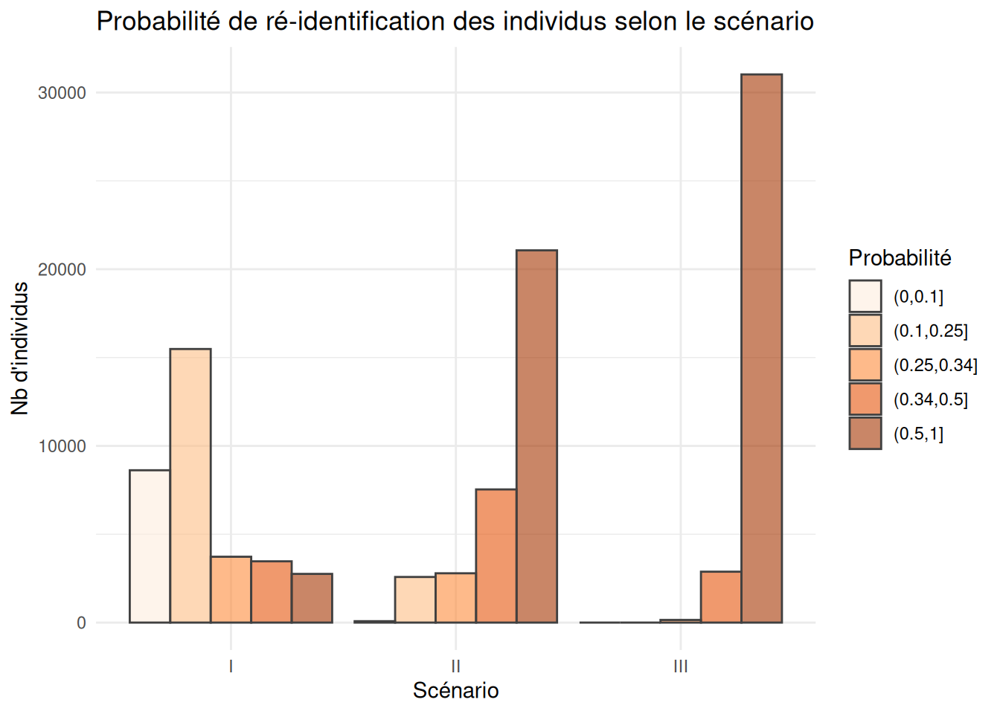
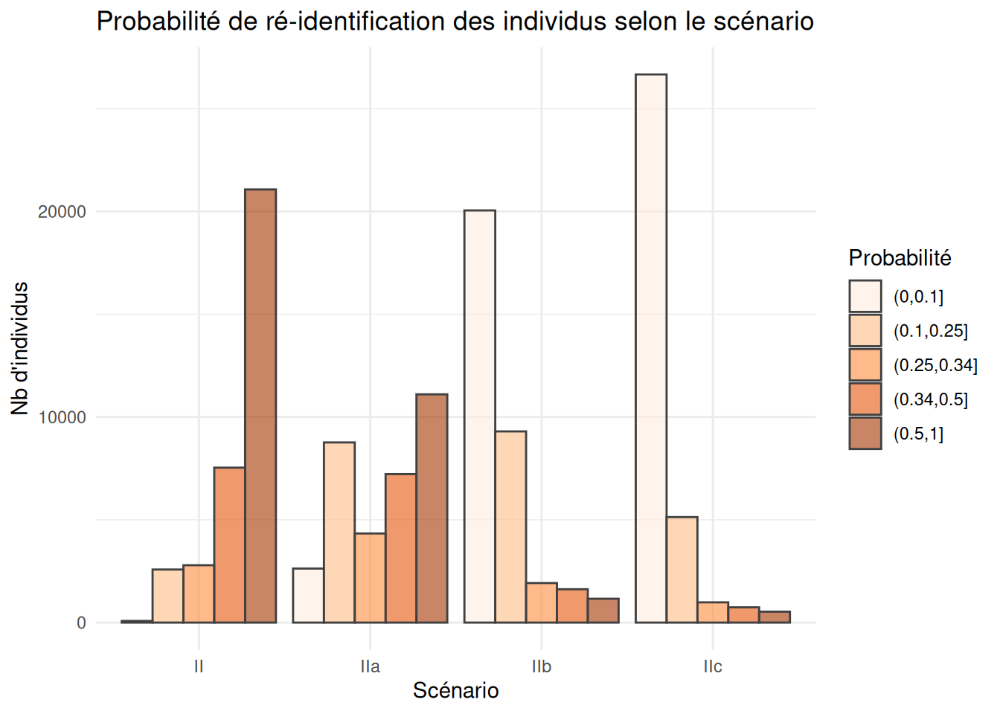

Code
library(readr)
library(purrr)
library(ggplot2)
library(dplyr)
library(sdcMicro) REG DEP ARR SEXE AGE AGE6 ACTEU DIP7 PCS1Q ANCCHOM HHID
<fctr> <fctr> <fctr> <fctr> <int> <fctr> <fctr> <fctr> <fctr> <fctr> <int>
1: 28 76 761 1 53 50 1 4 30 99 3558
2: 28 76 761 2 43 25 1 7 52 99 3558
3: 28 76 761 2 17 15 3 5 99 99 3558
4: 28 76 761 1 17 15 3 4 99 99 3558
5: 11 92 922 1 42 25 1 7 62 99 5973
6: 11 92 922 2 54 50 1 7 62 99 5973
HH_TAILLE HH_AGE HH_DIP HH_PCS IS_CHOM
<fctr> <fctr> <fctr> <fctr> <int>
1: 4 53 4 30 0
2: 4 53 4 30 0
3: 4 53 4 30 0
4: 4 53 4 30 0
5: 2 54 7 62 0
6: 2 54 7 62 0Dans un jeu de données, on distingue trois grands types de variables:
Ainsi, le premier type de variables engendre un risque de divulgation d’information confidentielle par la possibilité pour l’attaquant de ré-identifier des individus. En effet, si un ataquant dispose d’un fichier nomminatif - un fichier client par exemple - contenant des variables communes avec le jeu de données qu’on s’apprête à publier, il est alors en mesure d’apparier les deux et être en capacité de ré-identifier des individus si ceux-ci se trouvent avoir des caractéristiques peu fréquentes.
Prenons une liste très restreinte de quasi-identifiants: la géographie de résidence, le sexe et l’âge de l’individu. Ces informations sont disponibles par de nombreuses entreprises auprès desquelles nous souscrivons des services (banque, assurance, téléphonie, etc.).
En dénombrant les individus de chaque croisement entre les variables quasi-identifiantes, on peut détecter :
REG DEP ARR SEXE AGE n
<fctr> <fctr> <fctr> <fctr> <int> <int>
1: 11 75 751 2 97 1
2: 11 75 751 2 102 1
3: 11 75 751 2 103 1
4: 11 75 751 2 116 1
5: 11 77 771 1 15 1
6: 11 77 771 1 18 1 REG DEP ARR SEXE AGE n
<fctr> <fctr> <fctr> <fctr> <int> <int>
1: 11 75 751 2 52 43
2: 11 75 751 1 51 39
3: 11 75 751 1 21 36
4: 11 75 751 2 60 36
5: 11 75 751 2 61 36
6: 11 75 751 1 55 35Ainsi, si une entreprise de notre contrée imaginaire dispose d’un fichier sur tout ou partie de la population en âge de travailler (par exemple un opérateur téléphonique), il pourra ré-identifier sans peine les individus uniques du jeu de données qui seraient présents dans son fchier.
La capacité d’un attaquant à pouvoir ré-identifier un individu dépend du nombre d’individus du jeu de données qui partagent les mêmes caractéristiques sur les variables quasi-identifiantes.
Par exemple, si Thérèse est une femme de 97 ans résidant dans l’arrondissement 751, alors le jeu de données permet de la ré-identifier de façon certaine, puisqu’elle serait la seule dans ce cas.
Au contraire, si Thérèse est une femme de 52 ans résidant dans le même arrondissement, alors la probabilité de la ré-identifier dans le jeu de données avec ces seules informations serait de 1 chance sur 43.
Choisir les variables quasi-identifiantes est un exercice difficile puisqu’en général, nous n’avons pas une idée exacte des données à la disposition des attaquants potentiels. Il faut donc définir un scénario théorique suffisamment réaliste pour s’assurer de protéger les données individuelles des risques de ré-identification les plus importants.
En choisissant le premier jeu de variables quasi-identifiantes (géographie, sexe et âge), on considère le jeu minimal de quasi-idenfiants. L’extrême inverse consisterait à considérer toutes les variable comme des quasi-identifiants. Dans le premier cas, on définit un scénario minimaliste, dans le second le scénario est maximaliste.
Dans notre jeu de données fictif sur l’emploi et le chômage, on pourrait définir
Selon ces trois scénarios, le niveau de risque de ré-identifcation des individus ne sera pas le même
Loading required package: tidyrggplot(risques_reident$r_graph |> ungroup()) +
geom_bar(aes(fill=p_cl, x = scenario, y = n),
stat = "identity", alpha = 0.6, color = "grey25", position = "dodge") +
scale_fill_brewer("Probabilité", type = "seq", palette = 7) +
labs(x="Scénario", y="Nb d'individus") +
ggtitle("Probabilité de ré-identification des individus selon le scénario") +
theme_minimal()
| scenario | p_moy | p_d1 | p_med | p_d9 | part_uniques |
|---|---|---|---|---|---|
| I | 0.508 | 0.125 | 0.333 | 1 | 8.090 |
| II | 0.889 | 0.500 | 1.000 | 1 | 61.865 |
| III | 0.977 | 1.000 | 1.000 | 1 | 91.102 |
Certaines variables ont un pouvoir de ré-identification très fort, en particulier :
la géographie (de résidence, de travail, d’implantation): plus elle est précise plus la ré-identification est aisée, d’autant plus que l’adresse est souvent par ailleurs une donnée très largement partagée par les individus et les entreprises.
l’âge est également très ré-identifiant puisqu’il est à la fois public avec la disponibilité de l’état-civil et concerne, pour certains âges avancés, peu d’individus. Ainsi, si la personne la plus âgée résidant en France est dans notre fichier, nous avons toutes les chances de la ré-identifier de façon certaine en ne connaissant que son âge.
Pour réduire le risque de ré-identification, il est souvent très efficace de choisir de diffuser des variables d’âge et de géographie agrégées.
Comparons, par exemple, trois scénarios alternatifs au scénario II présenté ci-dessus:
qi_vars_IIa <- c("REG", "DEP", "AGE", "PCS1Q", "DIP7")
qi_vars_IIb <- c("REG", "DEP", "ARR", "AGE6", "PCS1Q", "DIP7")
qi_vars_IIc <- c("REG", "DEP", "AGE6", "PCS1Q", "DIP7")
risques_reident2 <- list(
"II" = qi_vars_II,
"IIa" = qi_vars_IIa,
"IIb" = qi_vars_IIb,
"IIc" = qi_vars_IIc) |>
comparer_risque_reidentification(data = lfs_2023)| scenario | p_moy | p_d1 | p_med | p_d9 | part_uniques |
|---|---|---|---|---|---|
| II | 0.889 | 0.500 | 1.000 | 1 | 61.865 |
| IIa | 0.763 | 0.250 | 1.000 | 1 | 32.605 |
| IIb | 0.419 | 0.071 | 0.333 | 1 | 3.406 |
| IIc | 0.347 | 0.038 | 0.250 | 1 | 1.559 |
ggplot(risques_reident2$r_graph |> ungroup()) +
geom_bar(aes(fill=p_cl, x = scenario, y = n),
stat = "identity", alpha = 0.6, color = "grey25", position = "dodge") +
scale_fill_brewer("Probabilité", type = "seq", palette = 7) +
labs(x="Scénario", y="Nb d'individus") +
ggtitle("Probabilité de ré-identification des individus selon le scénario") +
theme_minimal()
En réduisant le détail géographique, on a ici divisé par deux la part des uniques. Mais en passant à 6 tranches d’âges, celle-ci est divisée par 20!
Ainsi, les traitements les plus simples (recoder une variable) sont parfois les plus efficaces pour réduire massivement les risques individuels, même si cela ne les annihile pas tous.
sdcMicroLe package sdcMicro permet de mesurer les risques de ré-identification et le niveau d’anonymité d’un jeu de données individuelles assez simplement.
Dans un premier temps, on initialise un objet de la classe sdcMicroObj en mentionnant uniquement le jeu de données et les variables considérées comme quasi-identfiantes.
La fonction crée un objet dans une classe S4. Les différents attributs de l’objet (on dit des slots) sont donc accessibles avec le symbole @.
Les attributs disponibles pour un tel objet sont les suivants:
[1] "origData" "keyVars" "pramVars"
[4] "numVars" "ghostVars" "weightVar"
[7] "hhId" "strataVar" "sensibleVar"
[10] "manipKeyVars" "manipPramVars" "manipNumVars"
[13] "manipGhostVars" "manipStrataVar" "originalRisk"
[16] "risk" "utility" "pram"
[19] "localSuppression" "options" "additionalResults"
[22] "set" "prev" "deletedVars" Lors de la création de l’objet, un certain nombre de métriques de risque ont été calculées:
$risk
[1] 0.2659384
$risk_ER
[1] 9056
$risk_pct
[1] 26.59384
$threshold
[1] 0
$max_risk
[1] 0.01risk : risque individuel défini par \(\frac{1}{fk}\) si le fichier est une populationfk : nombre d’individus du fichier partageant les mêmes clés (croisements de quasi-identifiants)Fk : nombre d’individus dans la population partageant les mêmes clés (croisements de quasi-identifiants)Si le jeu de données étudié correspond à une population (fichier exhaustif du champ), alors \(fk = Fk = \sum_i{ 1(i \in k)}\), nombre d’individus \(i\) partageant la clé \(k\).
Si, au contraire, il s’agit d’un échantillon, on distinguera:
où \(S\) désigne l’échantillon (le fichier) et \(w_i\) le poids de l’individu \(i \in S\).
(Templ, Kowarik, and Meindl 2015; et Rinott and Shlomo 2006).
Certaines variables ont un pouvoir de ré-identification très fort, en particulier :
---
title: Les mesures du risque de divulgation
href: pratique/fiches/mesurer-risque.html
code-block-bg: true
code-block-border-left: "#bf9aff"
code-fold: show
---
```{r}
#| echo: true
#| message: false
#| output: false
library(readr)
library(purrr)
library(ggplot2)
library(dplyr)
library(sdcMicro)
```
## Les données
```{r}
#| echo: true
#| message: false
source("../R/fun_risque.R")
```
```{r}
source("../R/fun_import_data.R")
lfs_2023 <- import_lfs()
```
```{r}
head(lfs_2023)
```
## Les différents types de variables
Dans un jeu de données, on distingue trois grands types de variables:
- les *quasi-identifiants*: un ensemble de variables dont on suppose qu'un
attaquant est susceptible de les avoir déjà à sa disposition.
- les *variables sensibles*: les variables portant sur des thématiques
sensibles au sens de la Loi Informatique et Libertés
(religion, opinion, orientation sexuelle, etc.), mais on peut aussi y inclure
des variables dont la connaissance est susceptible de porter préjudice
à la personne (par exemple le salaire, le fait d'avoir une maladie, le fait
d'être au chômage, etc.).
- les *variables ni identifiantes ni sensibles*: celles qui a priori ne
posent pas de problème spécifique en terme de confidentialité.
## Le risque de ré-identification et le rôle des quasi-identifiants
Ainsi, le premier type de variables engendre un risque de divulgation d'information
confidentielle par la possibilité pour l'attaquant de ré-identifier des individus.
En effet, si un ataquant dispose d'un fichier nomminatif - un fichier client par
exemple - contenant des variables communes avec le jeu de données qu'on s'apprête
à publier, il est alors en mesure d'apparier les deux et être en capacité de
ré-identifier des individus si ceux-ci se trouvent avoir des caractéristiques
peu fréquentes.
### Un premier exemple
Prenons une liste très restreinte de quasi-identifiants: la géographie de résidence,
le sexe et l'âge de l'individu. Ces informations sont disponibles par de
nombreuses entreprises auprès desquelles nous souscrivons des services
(banque, assurance, téléphonie, etc.).
En dénombrant les individus de chaque croisement entre les variables quasi-identifiantes,
on peut détecter :
- le **niveau d'anonymité du fichier** au sens du **k-anonymat**: ici notre fichier est
1-anonyme puisqu'il contient de nombreux individus uniques dans leur catégorie.
- la détection des croisements et des **individus les plus à risque**:
> Moins il y a d'individus dans un groupe, plus la probabilité de ré-identification
par l'attaquant est forte. Dans le cas d'un groupe unique, la ré-identification
est même certaine.
```{r}
qi_vars_I <- c("REG","DEP","ARR", "SEXE", "AGE")
freq_qi_vars <- lfs_2023 |> count(across(all_of(qi_vars_I)))
freq_qi_vars |> arrange(n) |> head()
freq_qi_vars |> arrange(-n) |> head()
```
Ainsi, si une entreprise de notre contrée imaginaire dispose d'un fichier sur
tout ou partie de la population en âge de travailler (par exemple un opérateur
téléphonique), il pourra ré-identifier sans peine les individus uniques du jeu
de données qui seraient présents dans son fchier.
La **capacité d'un attaquant à pouvoir ré-identifier un individu** dépend du
nombre d'individus du jeu de données qui partagent les mêmes caractéristiques
sur les variables quasi-identifiantes.
Par exemple, si Thérèse est une femme de 97 ans résidant dans l'arrondissement `751`,
alors le jeu de données permet de la ré-identifier de façon certaine, puisqu'elle
serait la seule dans ce cas.
Au contraire, si Thérèse est une femme de 52 ans résidant dans le même arrondissement,
alors la probabilité de la ré-identifier dans le jeu de données
avec ces seules informations serait de 1 chance sur
`r freq_qi_vars |> filter(ARR == "751", SEXE == 2, AGE == 52) |> pull(n)`.
<!-- ```{r} -->
<!-- freq_qi_vars <- freq_qi_vars |> -->
<!-- mutate(p = 1/n) |> -->
<!-- mutate(p_cl = cut(p, breaks = c(0,0.1,0.25,0.34,0.5,1))) -->
<!-- ``` -->
<!-- ```{r} -->
<!-- #| code-fold: true -->
<!-- ggplot(freq_qi_vars) + -->
<!-- geom_bar(aes(x=p_cl), fill = "forestgreen", alpha = 0.6, color = "snow") + -->
<!-- labs(x="Probabilité d'être ré-identifié", y="Nb d'individus") + -->
<!-- ggtitle("Probabilité de ré-identification des individus") + -->
<!-- theme_minimal() -->
<!-- ``` -->
### Le choix des variables quasi-identifiantes
Choisir les variables quasi-identifiantes est un exercice difficile puisqu'en
général, nous n'avons pas une idée exacte des données à la disposition
des attaquants potentiels. Il faut donc définir un scénario théorique suffisamment
réaliste pour s'assurer de **protéger** les données individuelles
des risques de ré-identification les plus importants.
En choisissant le premier jeu de variables quasi-identifiantes (géographie, sexe et âge),
on considère le jeu minimal de quasi-idenfiants. L'extrême inverse consisterait
à considérer toutes les variable comme des quasi-identifiants. Dans le premier
cas, on définit un scénario minimaliste, dans le second le scénario est maximaliste.
Dans notre jeu de données fictif sur l'emploi et le chômage, on pourrait définir
- un scénario minimaliste: l'attaquant ne dispose que de la géographie, du sexe et de l'âge de ses clients
- un scénario intermédiaire: l'attaquant dispose en plus d'informations sur sa catégorie sociale et son niveau de diplôme
- un scénario maximaliste: l'attaquant dispose en réalité de toutes les informations sur les individus sauf de son ancienneté au chômage.
Selon ces trois scénarios, le niveau de risque de ré-identifcation des individus ne sera pas le même
```{r}
qi_vars_II <- c(qi_vars_I, "PCS1Q", "DIP7")
qi_vars_III <- c(names(lfs_2023)[!names(lfs_2023) %in% c("ANCCHOM")])
risques_reident <-
list("I" = qi_vars_I,
"II" = qi_vars_II,
"III" = qi_vars_III) |>
comparer_risque_reidentification(data = lfs_2023)
```
```{r}
#| cold-fold: true
ggplot(risques_reident$r_graph |> ungroup()) +
geom_bar(aes(fill=p_cl, x = scenario, y = n),
stat = "identity", alpha = 0.6, color = "grey25", position = "dodge") +
scale_fill_brewer("Probabilité", type = "seq", palette = 7) +
labs(x="Scénario", y="Nb d'individus") +
ggtitle("Probabilité de ré-identification des individus selon le scénario") +
theme_minimal()
```
```{r}
#| code-fold: true
risques_reident$r_stats |>
knitr::kable(
caption = "Risque de ré-identification des individus en fonction du scénario",
digits = 3
)
```
::: {.callout-warning}
### Des variables très efficaces pour la ré-identification
Certaines variables ont un pouvoir de ré-identification très fort, en particulier :
- la **géographie** (de résidence, de travail, d'implantation): plus elle est précise
plus la ré-identification est aisée, d'autant plus que l'adresse est souvent par
ailleurs une donnée très largement partagée par les individus et les entreprises.
- l'**âge** est également très ré-identifiant puisqu'il est à la fois public avec
la disponibilité de l'état-civil et concerne, pour certains âges avancés, peu
d'individus. Ainsi, si la personne la plus âgée résidant en France est dans notre
fichier, nous avons toutes les chances de la ré-identifier de façon certaine
en ne connaissant que son âge.
Pour réduire le risque de ré-identification, il est souvent très efficace de
choisir de diffuser des variables d'âge et de géographie agrégées.
Comparons, par exemple, trois scénarios alternatifs au `scénario II` présenté
ci-dessus:
- **scénario II-a**: le lieu de résidence n'est plus diffusé à l'arrondisement mais au département.
- **scénario II-b**: l'âge détaillé est remplacé par 5 tranches d'âges.
- **scénario II-c**: combinaison des deux scénarios ci-dessus.
```{r}
qi_vars_IIa <- c("REG", "DEP", "AGE", "PCS1Q", "DIP7")
qi_vars_IIb <- c("REG", "DEP", "ARR", "AGE6", "PCS1Q", "DIP7")
qi_vars_IIc <- c("REG", "DEP", "AGE6", "PCS1Q", "DIP7")
risques_reident2 <- list(
"II" = qi_vars_II,
"IIa" = qi_vars_IIa,
"IIb" = qi_vars_IIb,
"IIc" = qi_vars_IIc) |>
comparer_risque_reidentification(data = lfs_2023)
```
```{r}
#| code-fold: true
risques_reident2$r_stats |>
knitr::kable(
caption = "Risque de ré-identification des individus en fonction du scénario",
digits = 3
)
```
```{r}
#| cold-fold: true
ggplot(risques_reident2$r_graph |> ungroup()) +
geom_bar(aes(fill=p_cl, x = scenario, y = n),
stat = "identity", alpha = 0.6, color = "grey25", position = "dodge") +
scale_fill_brewer("Probabilité", type = "seq", palette = 7) +
labs(x="Scénario", y="Nb d'individus") +
ggtitle("Probabilité de ré-identification des individus selon le scénario") +
theme_minimal()
```
En réduisant le détail géographique, on a ici divisé par deux la part des uniques.
Mais en passant à 6 tranches d'âges, celle-ci est divisée par 20!
Ainsi, les traitements les plus simples (recoder une variable) sont parfois
les plus efficaces pour réduire massivement les risques individuels, même si
cela ne les annihile pas tous.
:::
### Avec le package `sdcMicro`
Le package `sdcMicro` permet de mesurer les risques de ré-identification et le
niveau d'anonymité d'un jeu de données individuelles assez simplement.
Dans un premier temps, on initialise un objet de la classe `sdcMicroObj` en
mentionnant uniquement le jeu de données et les variables considérées
comme quasi-identfiantes.
```{r}
lfs_sdc <- sdcMicro::createSdcObj(
lfs_2023,
keyVars = qi_vars_I
)
```
La fonction crée un objet dans une classe `S4`. Les différents attributs de l'objet (on dit des `slots`) sont donc accessibles avec le symbole `@`.
Les attributs disponibles pour un tel objet sont les suivants:
```{r}
slotNames(lfs_sdc)
```
Lors de la création de l'objet, un certain nombre de métriques de risque ont été
calculées:
- des mesures globales:
```{r}
lfs_sdc@risk$global
```
- des mesures individuelles :
- `risk` : risque individuel défini par $\frac{1}{fk}$ si le fichier est une population
- `fk` : nombre d'individus du fichier partageant les mêmes clés (croisements de quasi-identifiants)
- `Fk` : nombre d'individus dans la population partageant les mêmes clés (croisements de quasi-identifiants)
::: {.callout-note}
### Echantillon et Population
#### Population
Si le jeu de données étudié correspond à une population (fichier exhaustif du champ),
alors $fk = Fk = \sum_i{ 1(i \in k)}$, nombre d'individus $i$ partageant la clé $k$.
#### Echantillon
Si, au contraire, il s'agit d'un échantillon, on distinguera:
- $fk = \sum_{i \in S}{ 1(i \in k)}$
- $Fk = \sum_{i \in S}{ w_i \times 1(i \in k)}$
où $S$ désigne l'échantillon (le fichier) et $w_i$ le poids de l'individu
$i \in S$.
[@templ_statistical_2015; et @Rinott_Shlomo_2006].
:::
Certaines variables ont un pouvoir de ré-identification très fort, en particulier :
```{r}
head(lfs_sdc@risk$individual)
```
## Le risque de divulgation d'attributs sensibles
## SUDA
## Le risque individuel
### Mesures naïves
### Mesures probabilistes
### Les outliers
### References
::: {#refs}
:::